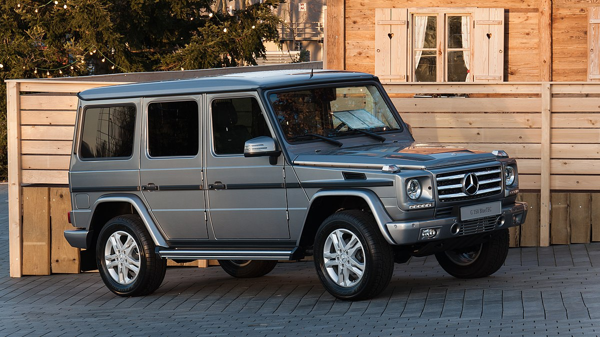

Mercedes-Benz AG es una empresa alemana fabricante de vehículos, subsidiaria de la compañía Mercedes-Benz Group La marca es reconocida por sus automóviles de lujo, deportivos, autobuses, camiones, utilitarios (SUVs) y vehículos todoterreno. Su eslogan es: Das Beste oder nichts ("Lo mejor o nada").
Sus más cercanos competidores en el mercado actual de coches de gama alta son: Acura, Alfa Romeo, Audi, DS Automobiles, Volvo, BMW, Lincoln, Cadillac, Infiniti, Jaguar Cars, Lexus, Maserati entre otros. La famosa estrella de tres puntas, diseñada por Gottlieb Daimler, simboliza la capacidad de sus motores para emplearlos en tierra, aire y mar.
Sus más cercanos competidores en el mercado actual de coches de gama alta son: Acura, Alfa Romeo, Audi, DS Automobiles, Volvo, BMW, Lincoln, Cadillac, Infiniti, Jaguar Cars, Lexus, Maserati entre otros. La famosa estrella de tres puntas, diseñada por Gottlieb Daimler, simboliza la capacidad de sus motores para emplearlos en tierra, aire y mar.
Aqui algunos de los vehiculos mas populares de la marca

Mercedes AMG-GT

Mercedes Clase E

Mercedes Clase G

Mercedes 190 SL

Mercedes Vito

Video de la marca